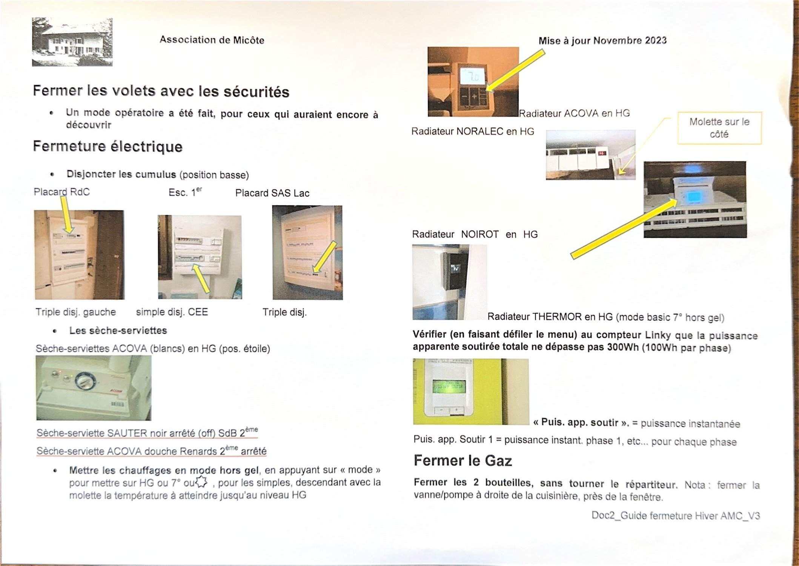
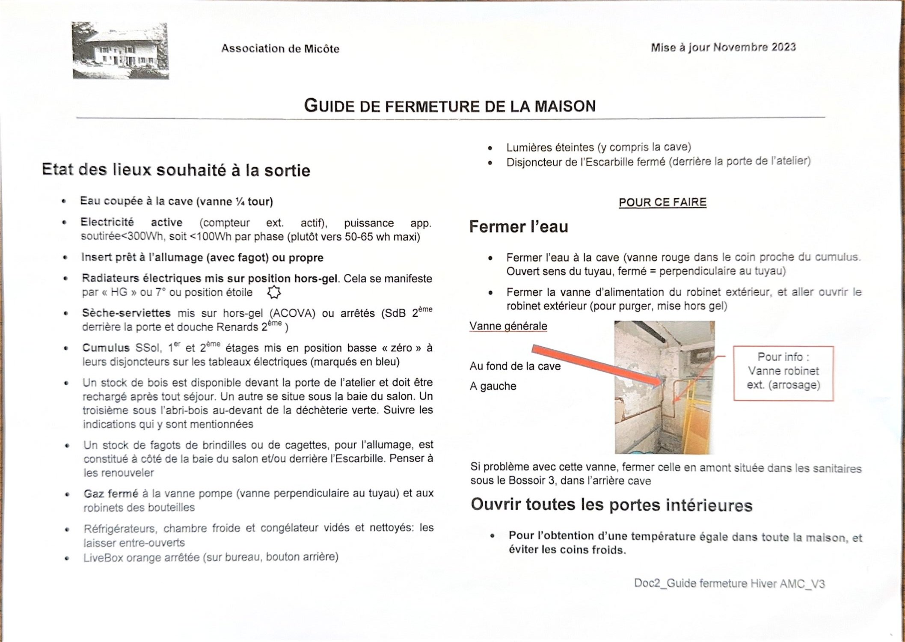

L'objectif : la maison doit rester hors-gel et sa consommation électrique tomber sous 300 W. Les occupants suivants doivent retrouver la maison prête.
Étape 1 Fermer l'eau
- Fermez l'eau à la cave — vanne rouge dans le coin proche du cumulus. Fermé = poignée perpendiculaire au tuyau.
- Fermez la vanne d'alimentation du robinet extérieur, puis allez ouvrir ce robinet pour le purger et le mettre hors gel.
La vanne générale est au fond de la cave, à gauche. En cas de problème avec elle, fermez celle en amont, dans les sanitaires sous le Bossoir 3, dans l'arrière-cave.
Pour une absence longue, voir la vidange complète du réseau.
Étape 2 Mettre le chauffage en hors-gel
- ❄️ Radiateurs électriques sur hors-gel : « HG », 7 °C ou position étoile. Sur les modèles simples, descendez la molette jusqu'au niveau HG.
- 🧺 Sèche-serviettes Acova (blancs) en hors-gel, position étoile.
- ⏹️ Sèche-serviette Sauter noir de la salle de bain du 2e : arrêté.
- ⏹️ Sèche-serviette Acova de la douche Renards (2e) : arrêté.
Le détail par marque est sur la fiche des radiateurs.
Étape 3 Fermeture électrique
Disjonctez les cumulus, en position basse, aux trois tableaux :
- Placard RdC
- Triple disjoncteur, à gauche
- Escalier 1er
- Simple disjoncteur, marqué CEE
- Placard sas Lac
- Triple disjoncteur
- 💡 Lumières éteintes, y compris la cave.
- 🔌 Disjoncteur de l'Escarbille fermé (derrière la porte de l'atelier).
- 📶 LiveBox Orange arrêtée — sur le bureau, bouton à l'arrière.
Étape 4 Vérifier au compteur Linky
Faites défiler le menu jusqu'à « Puis. app. soutir. » : c'est la puissance instantanée. « Puis. app. soutir 1 » correspond à la phase 1, et ainsi de suite.
- 🎯 Total attendu : moins de 300 W, soit environ 100 W par phase.
- 👍 Idéalement, on descend vers 50 à 65 W.

Étape 5 Fermer le gaz
- 🔵 Fermez les deux bouteilles, sans toucher au répartiteur.
- 🔧 Fermez la vanne pompe à droite de la cuisinière, près de la fenêtre — poignée perpendiculaire au tuyau.
Étape 6 Volets, portes et cuisine
- 🪟 Fermez les volets avec les sécurités (un mode opératoire détaillé existe dans les classeurs).
- 🚪 Ouvrez toutes les portes intérieures : la température s'égalise dans la maison et l'on évite les coins froids.
- 🧊 Réfrigérateur, chambre froide et congélateur vidés, nettoyés et laissés entrouverts.
Étape 7 Laisser la maison prête
- 🔥 Insert prêt à l'allumage (avec un fagot) ou propre.
- 🪵 Rechargez le stock de bois devant la porte de l'atelier après votre séjour. Deux autres stocks : sous la baie du salon, et sous l'abri-bois au-devant de la déchetterie verte — suivez les indications affichées.
- 🔥 Renouvelez les fagots de brindilles ou de cagettes, à côté de la baie du salon et derrière l'Escarbille.
